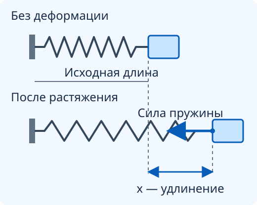

Сила как характеристика взаимодействия тел. Сила упругости. Закон Гука
Нажмём пальцем на губку — её форма изменится. Отпустим растянутую пружину — она начнёт сокращаться и может привести прикреплённую тележку в движение. Эти наблюдения связывают две уже знакомые идеи: тела взаимодействуют друг с другом, а при взаимодействии могут изменяться их движение и форма.
Что называют силой
Мяч после удара ногой разгоняется, при столкновении со стеной меняет направление движения, а при сдавливании руками деформируется. Во всех случаях нужно назвать два взаимодействующих тела. Например, нога действует на мяч, а мяч — на ногу.
Силу обозначают буквой \(F\). Единица силы в Международной системе единиц — ньютон, сокращённо Н, в честь Исаака Ньютона. Силу можно измерить динамометром; с устройством этого прибора мы познакомимся отдельно.
Для описания силы недостаточно одного числа. Важно знать её величину, направление и точку приложения. Если толкать дверь к петлям или от петель, результат будет разным. Даже одинаковые по величине силы могут действовать по-разному, если приложены в разных местах.
На рисунке силу изображают стрелкой: начало показывает точку приложения, направление стрелки — направление действия, а длина в выбранном масштабе — величину силы. Например, при масштабе «1 см — 2 Н» сила 6 Н изображается стрелкой длиной 3 см.
Не следует путать силу и скорость. Скорость описывает движение тела, а сила — действие на него другого тела. Сила может быть направлена и против движения, например при торможении.
Деформация и её виды
Деформацией называют изменение формы или размеров тела. Пружину можно растянуть или сжать, линейку — изогнуть, полотенце — скрутить. Даже твёрдые тела деформируются, хотя иногда изменение слишком мало, чтобы увидеть его без приборов.
Если после прекращения действия других тел тело восстанавливает прежние форму и размеры, деформацию называют упругой. Так ведёт себя пружина при небольшом растяжении.
Если изменение сохраняется, деформация пластическая. Например, размятый пластилин сам не возвращается к исходной форме. Одно и то же тело при слабом воздействии может деформироваться упруго, а при сильном — получить остаточное изменение формы или разрушиться.
Куда направлена сила упругости
При растяжении пружина действует на прикреплённое тело в сторону своего сокращения. При сжатии — в сторону своего распрямления. Аналогично прогнувшаяся опора действует на лежащее на ней тело.

На схеме показана сила пружины на прикреплённое тело. Чтобы удерживать тело справа в покое, на него нужно действовать ещё одной силой вправо. Эти две силы приложены к одному телу и компенсируют друг друга. Сила тела на пружину — другое действие, приложенное уже к пружине.
Длина пружины и её удлинение
Пусть длина пружины без деформации равна \(l_0\), а после растяжения — \(l\). Удлинение \(x\) равно разности этих длин:
Например, пружина длиной 10 см стала длиной 14 см. Её удлинение составляет 4 см, а не 14 см.
При сжатии величина деформации равна уменьшению длины: \(x=l_0-l\). В дальнейших расчётах \(x\) — положительная величина растяжения или сжатия.
Закон Гука
Если постепенно растягивать подходящую пружину, можно заметить: в пределах небольших деформаций удвоенному удлинению соответствует удвоенная сила упругости. Такая зависимость называется прямой пропорциональностью.
Жёсткость показывает, насколько трудно растянуть или сжать пружину. При одинаковой деформации более жёсткая пружина развивает большую силу упругости. Жёсткость зависит от материала и устройства пружины: толщины проволоки, диаметра витков и их числа.
Из закона Гука можно выразить жёсткость и деформацию:
Единица жёсткости — ньютон на метр, Н/м. Например, жёсткость 100 Н/м означает, что удлинению 1 см соответствует сила упругости 1 Н, если закон Гука при таком растяжении выполняется. Это не означает, что пружину можно без повреждения растянуть на целый метр.
Для одной пружины с жёсткостью 100 Н/м получаем расчётную таблицу:
| Удлинение, см | Удлинение, м | Сила упругости, Н |
|---|---|---|
| 0 | 0 | 0 |
| 1 | 0,01 | 1 |
| 2 | 0,02 | 2 |
| 3 | 0,03 | 3 |
Если построить график силы упругости в зависимости от удлинения в области действия закона Гука, получится прямая, проходящая через начало координат.
Разобранные примеры
Находим силу по изменению длины
Пружина стала длиннее
Длина ненагруженной пружины 12 см, после растяжения — 15 см. Жёсткость равна 80 Н/м. Найдём силу упругости.
Сначала определим удлинение:
По закону Гука:
Если пружина закреплена слева, а её конец смещён вправо, сила пружины на прикреплённое тело направлена влево.
Находим жёсткость и предсказываем растяжение
Та же пружина при другой силе
При удлинении 2 см сила упругости равна 3 Н. Определим жёсткость и удлинение при силе упругости 6 Н.
Переведём удлинение в метры и вычислим:
При другой силе:
Результат согласуется с прямой пропорциональностью: сила увеличилась вдвое, удлинение тоже увеличилось вдвое. Жёсткость пружины осталась прежней.
Главное в теме
Сила характеризует действие одного тела на другое; её описывают величиной, направлением и точкой приложения. Деформация — изменение формы или размеров тела. Сила упругости стремится восстановить исходное состояние деформированного тела. Для пружины в области действия закона Гука выполняется \(F_{\text{упр}}=kx\): сначала находят изменение длины, переводят его в метры и только затем выполняют расчёт.
Вопросы для самопроверки
Объясните своими словами
1. Какие два результата действия силы можно наблюдать? Приведите примеры. 2. Почему сила и скорость — разные физические величины? 3. Чем упругая деформация отличается от пластической? 4. В какую сторону пружина действует на тело при растяжении? А при сжатии? 5. Почему в формулу закона Гука нельзя подставлять полную длину пружины? 6. Можно ли применять закон Гука ко всякому упругому телу при любой деформации?
Самостоятельные задания
Считайте, что указанные пружины работают в области действия закона Гука. В расчётных задачах запишите данные, перевод единиц, формулу и вычисление.
- Изобразите силу 4 Н, направленную вправо, и силу 6 Н, направленную вверх. Масштаб: 1 см — 2 Н. Обозначьте точки приложения.
- Пружина без деформации имеет длину 8 см, после растяжения — 11 см. Её жёсткость 60 Н/м. Найдите удлинение и силу упругости.
- При удлинении пружины на 5 см сила упругости равна 4 Н. Определите жёсткость пружины.
- Пружина жёсткостью 200 Н/м сжата так, что сила упругости равна 6 Н. На сколько сантиметров уменьшилась её длина?
- Две пружины растянули на одинаковые 2 см. Их жёсткости равны 50 Н/м и 150 Н/м. Сравните силы упругости и объясните результат.
- Для пружины получены пары значений: при удлинениях 1, 2 и 3 см силы упругости равны соответственно 0,5; 1,0 и 1,5 Н. Постройте график, укажите величины и единицы на осях. Определите жёсткость и силу при удлинении 4 см, если закон Гука продолжает выполняться.
Домашнее задание по тематическому плану: §25, 27.